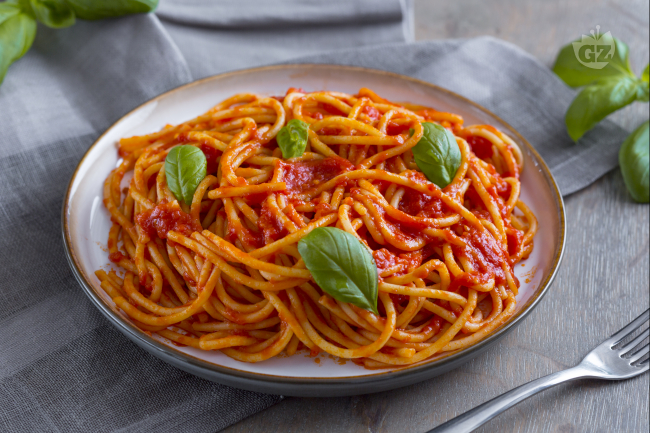

Pasta al Pomodoro Recipe

Description
Savor the beauty of a wonderfully straightforward Italian
meal. This dish celebrates a sauce made from
perfectly ripe tomatoes, garlic, and fresh basil, creating a
taste that is pure and vibrant. It's a recipe that proves how a few choice
ingredients can come together for an unforgettable and deeply
satisfying plate of pasta. This is the kind of
deliciously simple food that brings comfort and joy.
Ingredients
- 1 (16 ounce) package angel hair pasta
- ¼ cup olive oil
- ½ onion, chopped
- 4 cloves garlic, minced
- 2 cups roma (plum) tomatoes, diced
- 2 tablespoons balsamic vinegar
- 1 (10.75 ounce) can low-sodium chicken broth
- crushed red pepper to taste
- freshly ground black pepper to taste
- 2 tablespoons chopped fresh basil
- ¼ cup grated Parmesan cheese
Steps
-
Bring a large pot of lightly salted water to a boil. Add pasta and cook
for 8 minutes or until al dente; drain.
-
Meanwhile, pour olive oil in a large deep skillet over high-heat. Add
onions and garlic; cook and stir until softened and lightly browned.
Reduce heat to medium-high and add tomatoes, vinegar, and chicken broth;
simmer for about 8 minutes.
-
Stir in red pepper, black pepper, basil and cooked pasta, tossing
thoroughly with sauce. Simmer until pasta is heated through and serve
topped with grated cheese.
Home